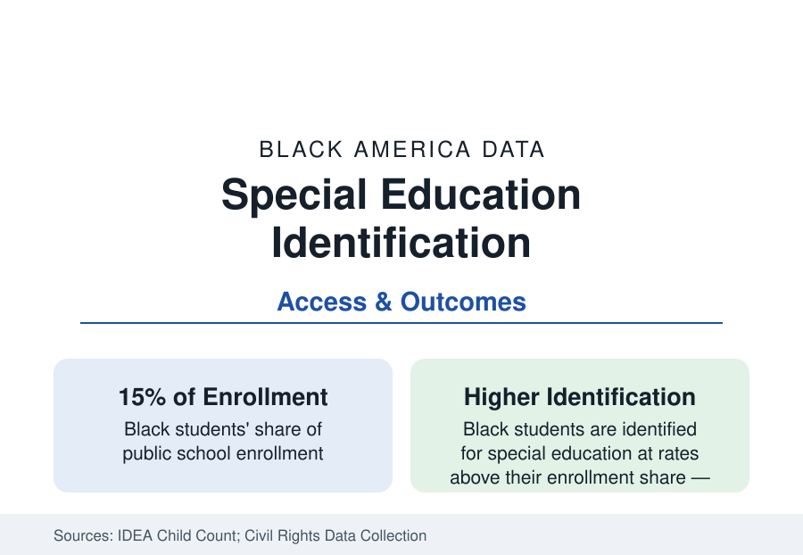

Black Education
Black Students in Special Education: The Over-Identification Data
Black students are identified for special education at rates above their enrollment share — concentrated in the judgment-based categories. The IDEA data.

Black children are identified for special education under the Individuals with Disabilities Education Act at rates above their share of enrollment — about 15 percent of students and a higher share of the roughly seven million children served under IDEA — with the elevation concentrated in the disability categories that depend most on professional judgment. The over-identification file is one of the longest-running in federal education data, and among the most contested in interpretation. This article reports it.
The Category Pattern
The Child Count data divide the story by category, and the division is the finding. In the objectively anchored categories — sensory impairments, orthopedic conditions, the diagnosed medical conditions — Black identification runs at or near enrollment share. In the judgment categories, it runs elevated: intellectual disability (historically the most elevated, at roughly twice the expected share in the older series, narrowing in the recent counts as assessment practices tightened), emotional disturbance (elevated in most states), and specific learning disability (moderately elevated and the largest category overall). Autism identification ran for decades in the reverse direction — Black children under-identified and diagnosed later — and has converged toward parity in the CDC's recent surveillance, which the literature reads as the under-service correction arriving. Speech and language services follow the early-childhood access data. The pattern — elevation exactly where judgment enters, parity where measurement rules — is the file's core exhibit, cited by every side of the interpretation debate.
The Interpretation Debate
Two research traditions read the same counts to different conclusions, and the reference reports both. The disproportionality tradition — the federal framework's own, which requires states to monitor and remedy 'significant disproportionality' — holds that elevated identification in subjective categories reflects bias in referral and assessment, compounded by placement patterns: Black students with disabilities are educated in more restrictive settings (separate classrooms and schools) at higher rates in the placement data, and exit to diplomas at lower rates. The adjustment tradition, led by a prominent series of analyses controlling for academic achievement and socioeconomic measures, finds the elevation attenuates or reverses at several grade spans — arguing that measured need, driven by the poverty and health exposures of the public health section (lead, prematurity, low birthweight, all disproportionately distributed), itself differs, and that under-services in the early grades are the deeper failure. The National Academies' consensus volume holds the position the data best support: both mechanisms operate, disproportionality is real in the judgment categories and the restrictive placements, and early intervention's under-provision to Black children with developmental delays is documented in the Part C infant-toddler data — the system identifies late, labels subjectively, and places restrictively in a single pattern.
Placement, Outcomes, and the Pipeline Question
The outcome data complete the file. Students with disabilities graduate at lower rates overall, and Black students with disabilities record among the lowest diploma rates of any federal subgroup — in the range of two-thirds to three-quarters in recent adjusted cohort data, with wide state variation — alongside the discipline data's most severe cells: the CRDC's restraint, seclusion, and suspension counts for students with disabilities, Black boys above all, are the K-12 section's darkest tables, and the intersection (Black, male, disability label) is where the school-discipline profile's numbers peak. Post-school outcomes in the longitudinal studies (employment and enrollment a year out) run correspondingly lowest. The systems' improvement data — inclusion rates rising, the diploma gap narrowing slowly, states under disproportionality remedy redesigning referral — trace the file's only acceptable direction.
The Families' Side of the Table
The IEP process — the individualized program meeting where identification becomes services — carries its own documented asymmetries: the parent-participation research records Black families' lower rates of advocacy representation, the due-process filings' concentration in wealthy districts (the system's remedies are used most where they are needed least), and the translation and scheduling barriers of the process itself. The counterweight institutions — the federally funded parent centers in every state, the protection-and-advocacy agencies, the special-education arms of the civil-rights organizations — exist on this file specifically, and their caseload data are part of the record. Early intervention's economics close the loop: the return-on-investment literature for early services is among the strongest in education, making the Part C under-enrollment the file's most expensive single cell.
Reading the Special Education Data
The IDEA counts describe a system that serves millions of Black children genuinely — the services are real, the teachers' corps of the earlier profile is real — while its identification machinery bends measurably at the points where judgment substitutes for measurement. Read with the gifted file beside it, the conclusion writes itself in the federal government's own tables: the judgment points are where equity goes to be decided, quietly, child by child.
More in Black Education
Black Educational Attainment: High School Parity, the College Gap
About 89 percent of Black adults hold a high school diploma and one in four holds a bachelor's degree or higher — the attainment ladder, the college completion gap, and the generational trend.
Historically Black Colleges and Universities: Enrollment and Degrees
More than 100 HBCUs enroll roughly 290,000 students and award about one in six Black bachelor's degrees — an outsized share from a small sector. The federal education data.
Black College Enrollment: 2.4 Million Students
About 2.4 million Black students are enrolled in American colleges — nearly two-thirds of them women. The NCES enrollment data by sector, level, and trend.
Source: U.S. Department of Education, IDEA Child Count and Civil Rights Data Collection; National Center for Education Statistics; National Academies and Learning Policy Institute special education research.